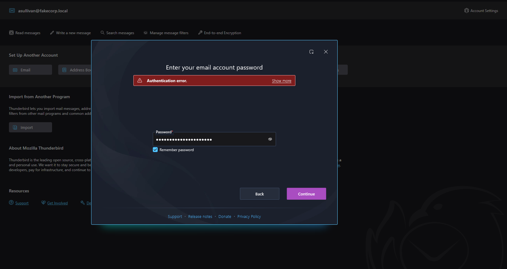
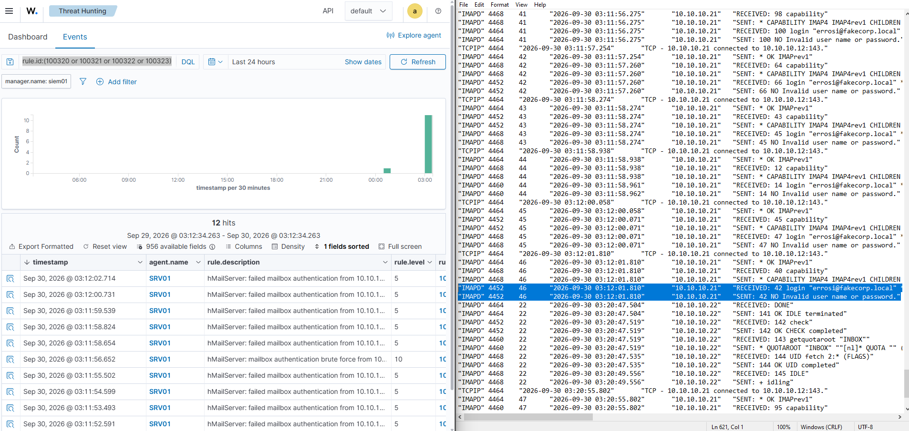
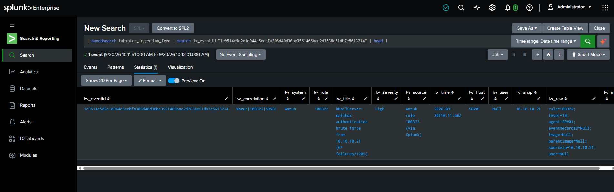
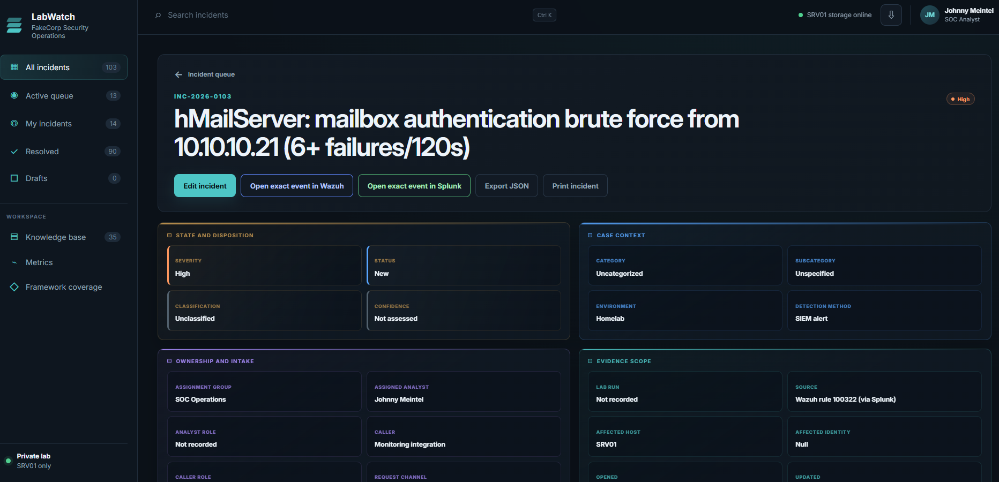
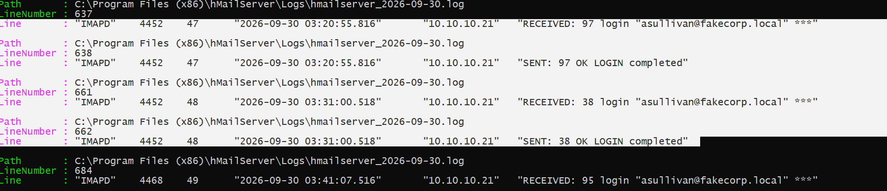

hMailServer Alert Test
I installed hMailServer on a Windows Server 2022 box and created over a dozen fake email accounts to test with. After failing a few logins, I grabbed the relevant strings from hMailServer's logs. Claude Code helped turn them into the following Wazuh ruleset:
<!--
hMailServer mail-auth detection rules (fakecorp.local email-security surface).
Authored 2026-09-23 (Claude Code). IDs 100320-100323.
100322 fires at level 10 -> auto-ingests as a LabWatch INC (feed = rule_level>=9).
100321 stays level 5 (correlation fuel, not an INC on its own).
-->
<group name="hmailserver,mail,">
<rule id="100320" level="0">
<decoded_as>hmailserver</decoded_as>
<description>hMailServer: $(hmail.type) session activity</description>
</rule>
<rule id="100321" level="5">
<if_sid>100320</if_sid>
<field name="hmail.msg" type="pcre2">(?i)invalid user name or password|authentication failed|535 authentication</field>
<description>hMailServer: failed mailbox authentication from $(srcip)</description>
<group>authentication_failed,pci_dss_10.2.4,</group>
</rule>
<rule id="100322" level="10" frequency="6" timeframe="120">
<if_matched_sid>100321</if_matched_sid>
<same_source_ip />
<description>hMailServer: mailbox authentication brute force from $(srcip) (6+ failures/120s)</description>
<group>authentication_failures,pci_dss_10.2.4,</group>
</rule>
<rule id="100323" level="8">
<if_sid>100320</if_sid>
<field name="hmail.msg" type="pcre2">(?i)relay(ing)? (is )?(not allowed|denied)|530 5\.7\.1</field>
<description>hMailServer: mail relay denied from $(srcip) (possible open-relay probe / spam attempt)</description>
<group>mail,spam,</group>
</rule>
</group>
The Wazuh agent on SRV01 reads the daily hMailServer log from C:\Program Files (x86)\hMailServer\Logs\ and sends its lines to the manager. Rule 100320 is the level 0 base for decoded mail activity; it does not appear as an alert in the dashboard. Rule 100321 raises a failed login to level 5. Six failures from one source IP within 120 seconds trigger rule 100322 at level 10, which LabWatch ingests as an incident.
Rule 100323 looks for a relay-denied response. That can be a sign of an unauthorized attempt to send through the mail server, but it does not mean every message addressed outside fakecorp.local is suspicious. I have not triggered this rule yet, so I treat it as untested.
Trigger multiple failed logins to the same fakecorp.local account with Mozilla Thunderbird:

This is what it looks like from hMailServer's log:
"IMAPD" 4468 45 "2026-09-30 03:12:00.071" "10.10.10.21" "RECEIVED: 47 login "errosi@fakecorp.local" ***" "IMAPD" 4468 45 "2026-09-30 03:12:00.071" "10.10.10.21" "SENT: 47 NO Invalid user name or password."
On SIEM01, rule 100321 matches the case-insensitive Invalid user name or password response after the SRV01 agent ships the log line. I can view the mail-rule alerts in Wazuh with:
rule.id:(100320 or 100321 or 100322 or 100323)
Here is the relevant part of the level 10 Wazuh alert as formatted JSON:
{
"data": {
"srcip": "10.10.10.21",
"hmail": {
"msg": "SENT: 100 NO Invalid user name or password.",
"session": "41",
"thread": "4464",
"time": "2026-09-30 03:11:56.275",
"type": "IMAPD"
}
},
"rule": {
"firedtimes": 1,
"mail": false,
"level": 10,
"pci_dss": [
"10.2.4"
],
"description": "hMailServer: mailbox authentication brute force from 10.10.10.21 (6+ failures/120s)",
"groups": [
"hmailserver",
"mail",
"authentication_failures"
],
"id": "100322",
"frequency": 6
}
}

On the right is hMailServer's log file, and on the left is Wazuh's successful alert firing. The Wazuh server has a Splunk forwarder attached, so the alert was ingested there as well:

An incident was automatically created in my LabWatch portal:

Assigned Analyst: Johnny Meintel (me)
Assignment Group: SOC Operations
What does an analyst do with a suspicious failed login? Let's break it down one step at a time.
1I need the source IP address
10.10.10.21
That is WS01 on the internal 10.10.10.0/24 network. I know I generated this lab activity. If this were a real incident, though, I could not call it benign just because the address is internal. A user might mistype a password, or an attacker might be using a compromised workstation. I would check the server replies and the wider timeline before deciding.
2Check the hMailServer logs directly
Using the log time recorded in the Wazuh event (2026-09-30 03:11:56.275), I head to SRV01 and query the log.
What matters:
# Time (Pacific) Source Mailbox tried Server reply 1 03:11:50.438 10.10.10.21 errosi@fakecorp.local NO Invalid user name or password 2 03:11:51.933 10.10.10.21 errosi@fakecorp.local NO Invalid user name or password 3 03:11:53.166 10.10.10.21 errosi@fakecorp.local NO Invalid user name or password 4 03:11:54.215 10.10.10.21 errosi@fakecorp.local NO Invalid user name or password 5 03:11:55.209 10.10.10.21 errosi@fakecorp.local NO Invalid user name or password 6 03:11:56.275 10.10.10.21 errosi@fakecorp.local NO Invalid user name or password - rule 100322 (level 10) fired here 7 03:11:57.260 10.10.10.21 errosi@fakecorp.local NO Invalid user name or password 8 03:11:58.274 10.10.10.21 errosi@fakecorp.local NO Invalid user name or password 9 03:11:58.961 10.10.10.21 errosi@fakecorp.local NO Invalid user name or password 10 03:12:00.071 10.10.10.21 errosi@fakecorp.local NO Invalid user name or password 11 03:12:01.810 10.10.10.21 errosi@fakecorp.local NO Invalid user name or password
11 failed logins in 11 seconds, all to the same user.
Affected account: errosi@fakecorp.local.
3Widen the time window. Has this source IP touched other accounts?
The 11 errosi failures explain why rule 100322 fired, but they do not tell me everything WS01 did. I searched the hMailServer logs retained on SRV01 for login requests and replies from 10.10.10.21.
The results include asullivan@fakecorp.local before the alert and again afterward. One pair I can verify is:
03:20:55.816 session 47 RECEIVED: 97 login "asullivan@fakecorp.local" *** 03:20:55.816 session 47 SENT: 97 OK LOGIN completed
The matching session number (47) and command tag (97) tie the request to the server reply. OK LOGIN completed means that login worked. It happened about nine minutes after the errosi failures. I made that login myself. In a real incident, the log alone would not tell me who was at WS01.

4What would this mean in a real incident?
In this lab, I caused the failed errosi attempts and the asullivan logins from WS01. I used Thunderbird to make the mail service generate the activity, then followed that activity through hMailServer, Wazuh, Splunk, and LabWatch.
If I saw this pattern in an organization where I did not already know the operator, the successful asullivan login would change the question. I would check whether that success belonged to the real user, whether the workstation was under their control, and whether the account did anything unusual after login.
5Document incident
For INC-2026-0103, I know this was my authorized mail-rule test. Rule 100322 correctly fired on the sixth failed login, and the case correctly opened in LabWatch. The appropriate classification is Expected Test Activity, not False Positive.
I attach the relevant hMail log excerpt, the exact Wazuh alert, and the Splunk result; record the source, both mailbox names, the 03:11:50 to 03:12:01 failure burst, and the 03:20:55 successful login, and then state that I performed the test and what the detection validated.
Here's how the incident broke down
Observed facts
Began hMailServer failed-login alert testing at about 3:10 AM PT. Eleven failed IMAP logins for errosi@fakecorp.local came from 10.10.10.21 (WS01) between 03:11:50 and 03:12:01 PT, about 11 seconds, roughly one per second. Rule 100321 (level 5) fired for each failure; rule 100322 (level 10) fired once, on the sixth failure at 03:11:56, and opened this incident. The auto-ban threshold had been raised from 3 to 12 for the test.
Classification and severity
Expected Test Activity. Severity: Informational.
MITRE ATT&CK and NIST
T1110.001 (Brute Force: Password Guessing). NIST CSF 2.0: DE.CM (Continuous Monitoring) and DE.AE (Adverse Event Analysis).
Scope
One source (10.10.10.21, WS01) and one host (SRV01, hMailServer IMAP on port 143). Eleven failed logins for one mailbox that does not exist: errosi@fakecorp.local, a mistyped name (the real address is erossi@fakecorp.local). The same source also had successful logins to asullivan@fakecorp.local before and after the burst, roughly every 10 minutes from 01:48 to 03:10 and again at 03:20:55. No other mailbox had a failed login.
Attribution
Benign by attribution. This was my own test from WS01 to verify rules 100321 and 100322. The mail server answers the same way for a wrong password and for a mailbox that does not exist, so the log alone cannot tell those two cases apart.
Impact
None. No account was compromised and no data was read. The only successful logins were to asullivan@fakecorp.local from the same workstation, from the mail client's regular checks and my own logins. Mailboxes have no lockout, and the auto-ban threshold (12) was not reached.
Detection
Rule 100321 fired for each failure. Rule 100322 fired on the sixth failure, and LabWatch opened the incident. After it fired, the count reset: five more failures did not raise a second level 10. At the mail server's default auto-ban of 3 failures, the ban would have blocked the source before the sixth failure, so 100322 would not have fired at all.
Lessons
A mail server's built-in ban can silence a brute-force rule, so I raised the threshold to 12 to test it. A successful login after a run of failures is what would turn this into a real escalation, so in a real case I would check for one before closing.